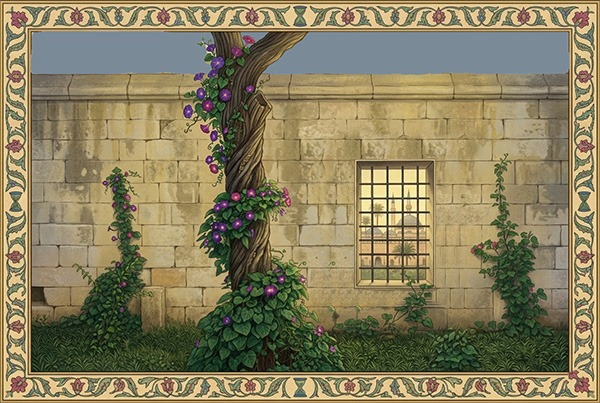

Darüşşifa Bahçesi'ndeki Tarihi Sarmaşık ve Ağaç
AĞAÇLA SARMAŞIK
Burada, bu eski Darüşşifa’da,
Birbirine aşık iki genç varmış.
Kızın bulunduğu yer loş bir oda,
Oğlanın kaldığı yer daha darmış.
Birbirine aşık iki genç varmış.
Kızın bulunduğu yer loş bir oda,
Oğlanın kaldığı yer daha darmış.
Her sabah avluda buluşurlarmış,
Doluncaya kadar bir kum saati.
Kızın etrafını periler sarmış,
Oğlanın altında bir sihir atı.
Doluncaya kadar bir kum saati.
Kızın etrafını periler sarmış,
Oğlanın altında bir sihir atı.
Nihayet bir zaman gelmiş, sıhhati
Düzelmiş bu iki sevdalı gencin.
Bir anda kaybolmuş hayatın tadı,
Meğer saadetmiş bu onlar için.
Düzelmiş bu iki sevdalı gencin.
Bir anda kaybolmuş hayatın tadı,
Meğer saadetmiş bu onlar için.
Son defa yan yana gelmiş ikisi,
And içmiş bir daha ayrılmamaya;
Kandırıp bu iki aşık herkesi,
Yeniden girmişler Darüşşifa’ya.
And içmiş bir daha ayrılmamaya;
Kandırıp bu iki aşık herkesi,
Yeniden girmişler Darüşşifa’ya.
En sonda acımış onlara Hızır,
Yaptığı bir iksir varmış kendinin,
Uyuduğu zaman Başhekim, Nazır,
İlacına katmış her ikisinin.
Yaptığı bir iksir varmış kendinin,
Uyuduğu zaman Başhekim, Nazır,
İlacına katmış her ikisinin.
İçince iksirden bu iki aşık,
Dünyası değişmiş her iki canın,
Kız bir ağaç olmuş, oğlan sarmaşık,
Issız bahçesinde Darüşşifa’nın.
Dünyası değişmiş her iki canın,
Kız bir ağaç olmuş, oğlan sarmaşık,
Issız bahçesinde Darüşşifa’nın.
EDİRNE, 1957